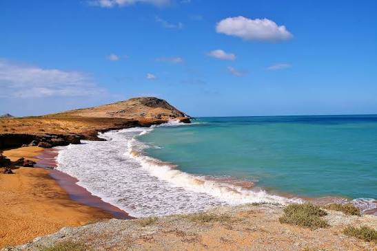
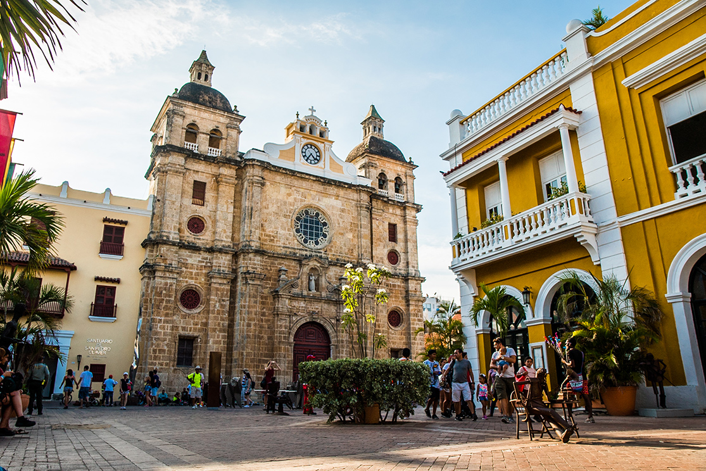
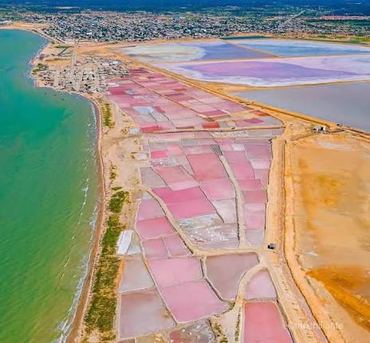

Cabo de la Vela
Uribia, La Guajira
Un destino natural reconocido por sus paisajes desérticos y playas.
Ver ubicaciónExplora paisajes increíbles, conoce lugares únicos y descubre la riqueza turística de Colombia.

Conoce algunos de los lugares turísticos más interesantes de Colombia.

Uribia, La Guajira
Un destino natural reconocido por sus paisajes desérticos y playas.
Ver ubicación
Alta Guajira
Uno de los lugares más representativos de los paisajes naturales de La Guajira.
Ver ubicación
Camarones, Riohacha
Un espacio natural de gran importancia por su biodiversidad.
Ver ubicación
Manaure, La Guajira
Un paisaje característico de la producción artesanal de sal.
Ver ubicaciónCartagena de Indias, Bolívar
Un destino histórico reconocido por su arquitectura colonial.
Ver ubicaciónSelecciona un destino para consultar su ubicación.
Selecciona un destino en el mapa para ver su clima.
Datos: Open-Meteo. Hora de Colombia.
Haz preguntas sobre los cinco destinos registrados en ExploraGuajira.